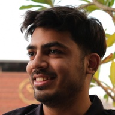
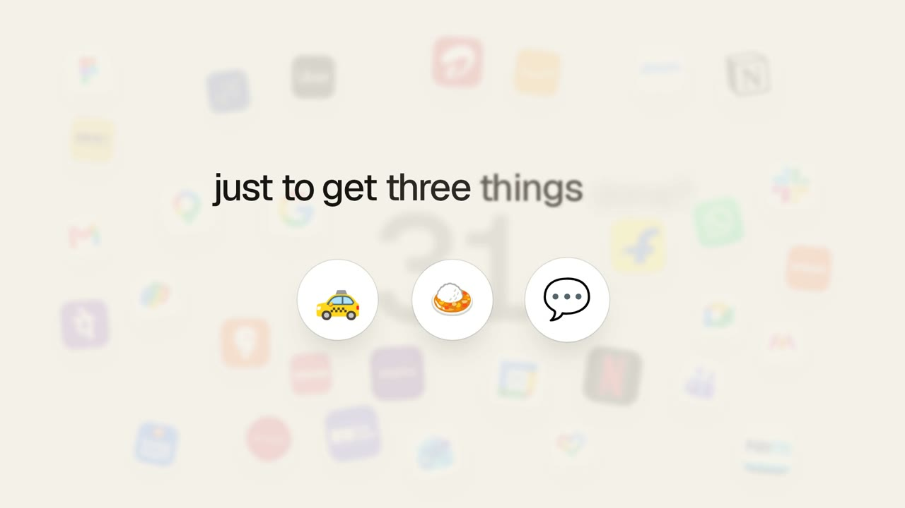
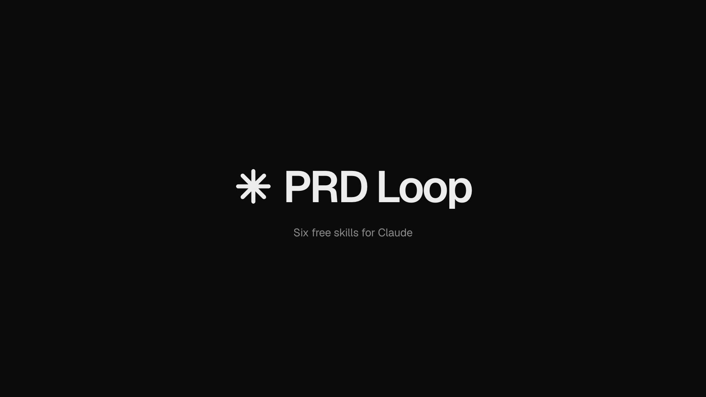
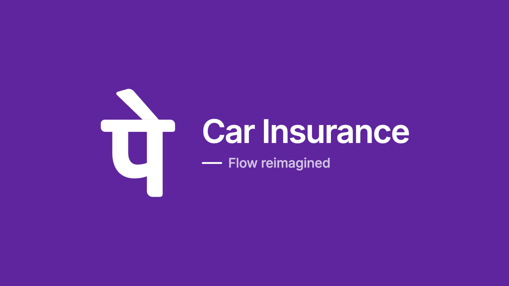
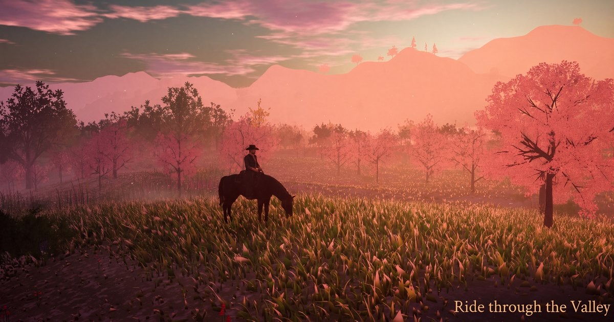
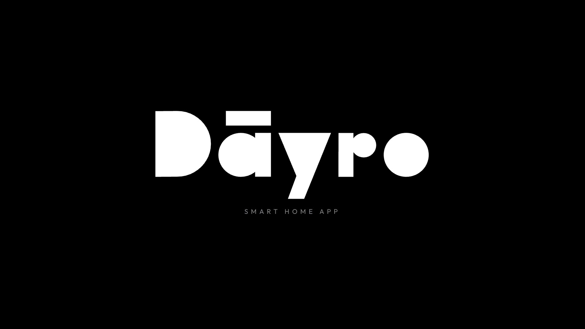
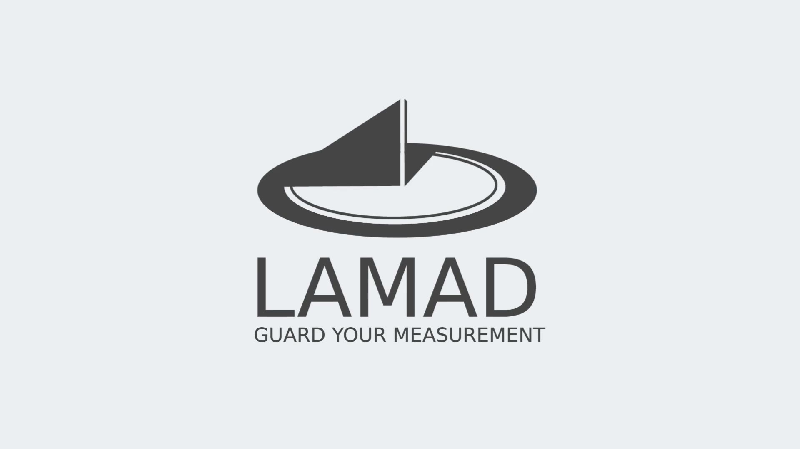
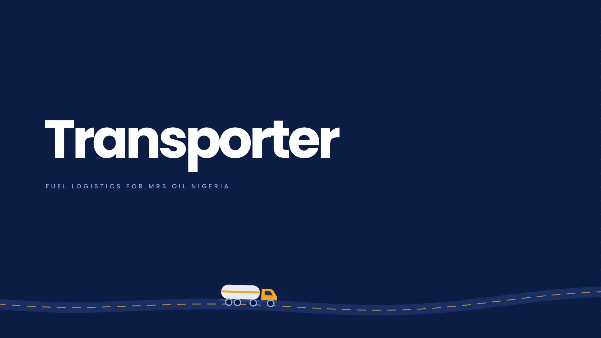
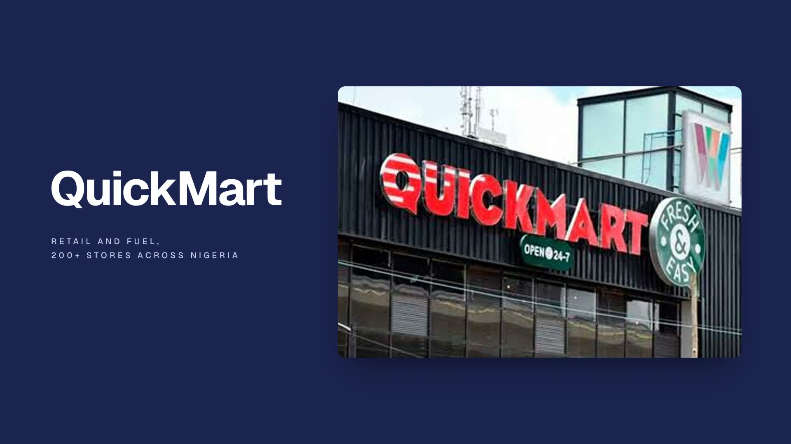

Hey, I’m Aarya
an AI product designer
For three years I designed the heavy stuff: fuel logistics, ERPs, a 200-store retail chain, and 27 client projects across 7 countries at Whatmatters.
Now AI lets designers build, so I ship what I design: three websites and two apps lately. The latest, Goalkeeper, is a voice assistant in testing, with 35 people waiting.
Next, I want a team where I own the work and its numbers.
Selected work
- GoalkeeperA voice assistant for everyday errands. Say what you need and it drafts it, compares prices and opens the right app to finish.

- PRD LoopSix free skills for Claude that keep a PRD true while the work moves.

- PhonePe Car InsuranceRedesigning the car insurance flow in PhonePe, to make the whole journey clearer and easier to finish.

- Ride through the ValleyA game I built: a horse rider travels through a valley as the weather changes around them.

- Dayro Smart HomeA consumer IoT app for running a smart home from your phone.

- LAMAD ERPAn ERP for a company that had never used enterprise software before.

- TransporterFuel logistics across five connected platforms, from the depot to the road.

- QuickMartThe backend behind a retail chain of 200 stores.

Kind words
“I had a great experience working with Aarya on designing my firm’s website. He is highly professional, creative, and very responsive throughout the process. He understood our requirements clearly and delivered a modern, clean, and high-quality website. I am fully satisfied with his work and would definitely recommend him to anyone looking for a reliable and skilled web designer.”
Heet Jivani · Founder @ Stairs Media“He is a rare talent in the UI/UX space who truly understands the balance between aesthetic elegance and functional usability. His designs didn’t just make our product look better; they significantly improved our user engagement and streamlined the overall flow. If you’re looking for a designer who prioritizes the user journey as much as the visual identity, I couldn’t recommend him more highly.”
Dhrumil Patel · CEO @ Logicbric“I enjoyed the timely delivery. His ability to work and grasp on feedback made it very easy going for one to work with him as a designer. Aarya comes with a sharp sense of research in his designs.”
Yashvi Mehta · Marketing Consultant“The UI/UX project with Aarya was a great learning experience. The guidance was clear and practical, helping me understand user-centred design, wire-framing, and usability principles. The feedback was constructive and improved my design thinking and confidence.”
Bhavik Patel · CEO @ Rysysth Technologies